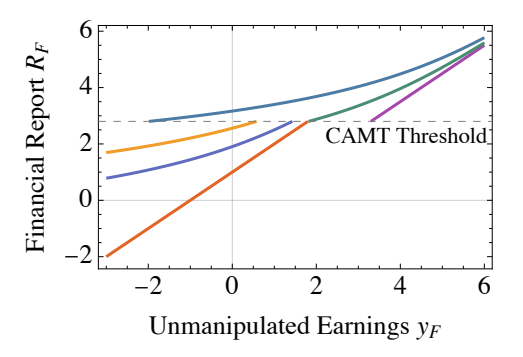

The Corporate Alternative Minimum Tax and Financial Reporting Incentives
Junyoung Jeong, Rebecca Lester, Kevin Smith
The paper models how the Corporate Alternative Minimum Tax, levied on financial-statement income, shapes reporting, finding it can improve or degrade reporting quality depending on managerial incentives and that real earnings management rises when the tax binds.
Read paper